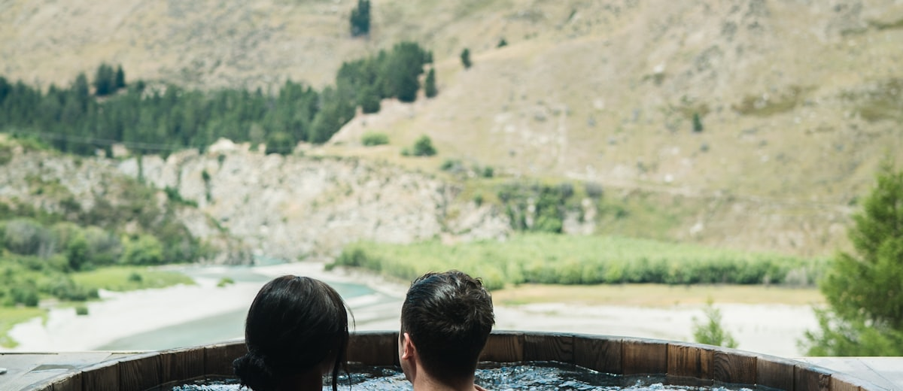

Spas médicos en Austria: qué es real y qué es marketing

Buscas un destino en Europa para frenar el ritmo, tratar el agotamiento crónico o mejorar tu salud digestiva, y Austria aparece rápidamente como el referente europeo en turismo médico de bienestar. Antes de abonar un depósito de varios miles de euros, conviene separar el diagnóstico clínico riguroso de las promesas publicitarias.
Un centro de salud médica en Austria no es un hotel resort con masajes relajantes. Lugares como el Tirol o los lagos de Carintia albergan clínicas de medicina F. X. Mayr y centros de prevención con médicos colegiados. La clave está en entender qué puede aportar la medicina preventiva austríaca y qué forma parte del envoltorio comercial.
Lo que sí es real: supervisión médica y diagnóstico preventivo
A diferencia de los retiros holísticos sin regulación sanitaria, los Medical Spas austríacos acreditados cuentan con médicos —medicina general o especialistas en medicina interna— integrados en el programa diario.
- Evaluación diagnóstica inicial: análisis de sangre completos, medición de la variabilidad de la frecuencia cardíaca (HRV) para valorar el estrés y pruebas de tolerancia metabólica.
- Medicina de reposo intestinal (F. X. Mayr): protocolos centrados en la microbiota, ayunos guiados y reeducación masticatoria con supervisión nutricional diaria.
- Instalaciones de nivel clínico: crioterapia médica, salas de hipoxia/hiperoxia y tratamientos termales bajo prescripción médica explícita.
El valor real de estos centros está en la pausa biológica supervisada y la estructura diagnóstica, no en milagros instantáneos.
Lo que es marketing: el mito del "detox" en 7 días
Las campañas comerciales suelen prometer "rejuvenecer 10 años" o "eliminar todas las toxinas acumuladas" en una estancia de una semana. Aquí conviene mantener el criterio.
El hígado y los riñones se encargan de la depuración natural del cuerpo. Un programa de 7 días puede aliviar la inflamación digestiva, reducir marcadores de estrés y mejorar el sueño, pero no revierte patologías crónicas ni sustituye a los hábitos sostenidos. Si un centro vende "desintoxicación milagrosa", desconfía.
Una semana puede darte una buena pausa y un buen diagnóstico. No te va a dar otra vida: eso lo construyes al volver a casa.
Desglose de costes en 2025-2026: precios y gastos ocultos
Los precios en los centros médicos austríacos son elevados y piden mirar el presupuesto con lupa antes de reservar:
- Programa médico básico (7 días): entre 2.200 € y 3.800 € por persona. Suele incluir consulta inicial y final, plan nutricional y tratamientos estandarizados.
- Alojamiento y pensión (se factura aparte): las habitaciones en clínicas reconocidas rondan entre 250 € y 650 € por noche. Una estancia completa de 7 días rara vez baja de 4.500 € a 8.000 € por persona.
- Suplementos y pruebas extra: analíticas genéticas, sueroterapia intravenosa, masajes médicos adicionales o consultas con especialistas externos no suelen estar incluidos y se añaden a la factura final.
Cobertura legal, idioma y seguimiento al volver a España
Viajar a Austria es moverse dentro del marco de la Unión Europea, pero hay puntos clave que debes prever:
Seguros y Tarjeta Sanitaria: la Tarjeta Sanitaria Europea cubre la asistencia pública de urgencia, pero no cubre estancias programadas en clínicas privadas de medicina preventiva. Tu seguro privado en España tampoco reembolsará estos costes salvo que tengas una póliza internacional con cobertura preautorizada.
Idioma e informes médicos: asegúrate de que las consultas y el informe médico final (Arztbrief) se entreguen en inglés o español. Ese documento es indispensable para que tu médico de cabecera en España sepa qué tratamientos o cambios dietéticos te han prescrito.
Checklist antes de contratar un spa médico en Austria
- Verifica la dirección médica: confirma que el centro cuenta con un médico responsable colegiado (Österreichische Ärztekammer).
- Exige el desglose del presupuesto: tarifa del programa médico separada del coste por noche de habitación.
- Informa de tus antecedentes: patologías previas, problemas metabólicos o medicación continuada, antes de empezar.
- Pregunta por los extras: precio de analíticas especiales y sueroterapia antes de autorizarlas en consulta.
Preguntas rápidas
- ¿Un spa médico cura? No. Ofrece diagnóstico preventivo y una pausa supervisada; no revierte enfermedades crónicas.
- ¿El "detox" funciona? Tu hígado y tus riñones ya depuran. Una semana mejora digestión, sueño y estrés, pero no "elimina toxinas" por arte de magia.
- ¿Lo cubre el seguro? No, salvo póliza internacional con autorización previa. La Tarjeta Sanitaria Europea tampoco.